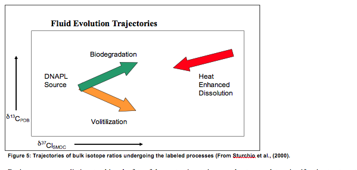
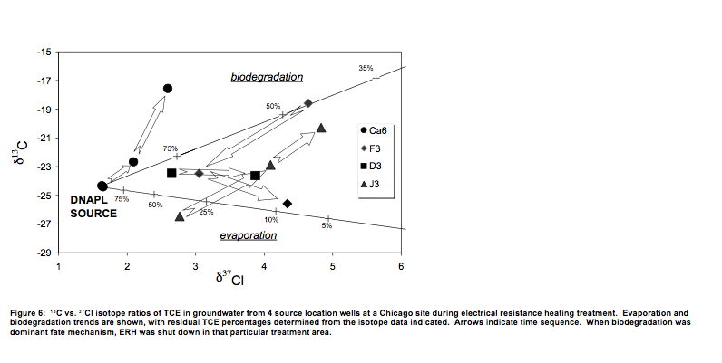

Chemical bonds can be likened to a gravitational attraction. The mass difference between heavier isotope and light isotope results in a stronger bond for the heavier isotope in a molecule. Therefore, when compounds breakdown through biodegradation or hydrolysis, the chemical bonds in the lighter isotopes break down in preference to the heavier isotopes. This process is called “fractionation” and is the reason why isotopes can be used to determine the fate of these compounds in the environment. Fractionation means a change to the isotope ratio during a process .
Figure 5 presents a generalization of the trends of δ13C and δ37Cl during in situ thermal remediation that can be used to interpret the changes that occur during treatment of the groundwater. Because of the extremely low detection capability of these measurements, this can be done to a higher degree of certainty than is currently done using conventional concentration data.

Figure 5: Trajectories of bulk isotope ratios undergoing the labeled processes (From Sturchio et al., (2000).
During source remediation, tracking the fate of the contaminants in groundwater can determine if active treatment can be discontinued. The active remediation may involve pump and treat, in situ thermal, chemical oxidation, etc. Once it has been isotopically determined that intrinsic biodegradation is taking place, active remediation was discontinued. Conventional natural attenuation evaluations were then used to corroborate if active remediation could be discontinued.
